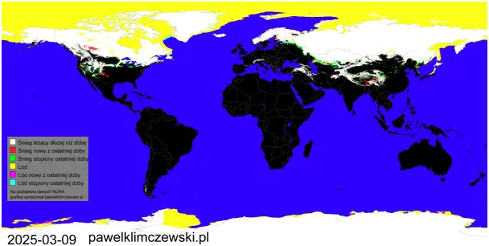
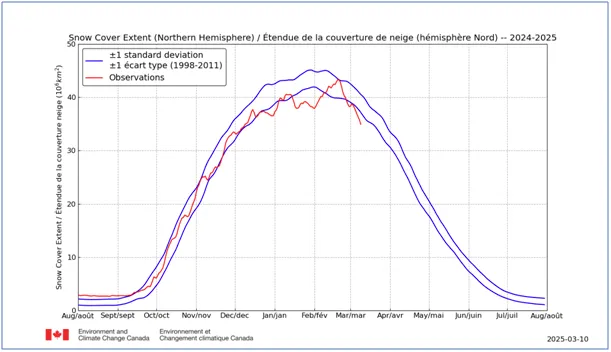
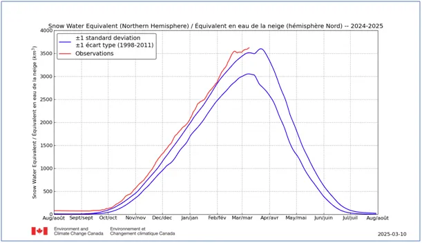
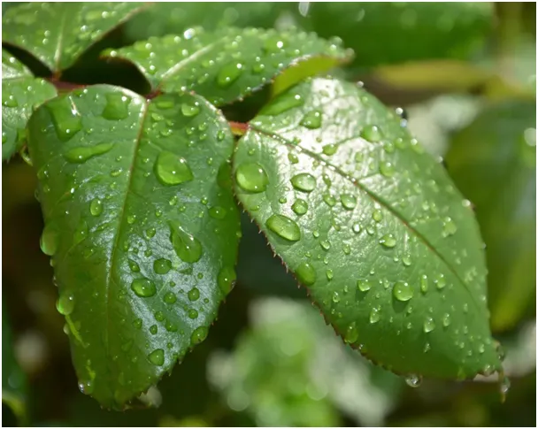

Wiosna zmienia globalną politykę
Gdy pierwszy wykres mówi nam, że zasięg pokrywy śnieżnej północnej półkuli jest poniżej dolnej normy to wykres drugi mówi nam, że ilość wody uwięzionej w śniegu jest znacznie ponad normą i idzie na rekord.


Z tych dwóch liczb wnioskujemy, że grubość pokrywy śnieżnej w dalekiej Arktyce i w górach jest znacznie większa niż w przeszłości, a szanse na jej całkowite stopienie latem małe. Wiemy też z dwuletniej obserwacji tych raportów, że śnieg latem nie topnieje całkiem czyli następuję jego kumulacja. Mamy więc przynajmniej od trzech lat do czynienia ze zjawiskiem wzrostu czapy lodowej na naszej półkuli. Niestety nie wiemy co było wcześniej bo dopiero od dwóch lat łapię autorów tego badania na "gumkowaniu" nadmiarowego śniegu w nocy na przełomie lipca i sierpnia , gdy zaczyna się nowy sezon obserwacyjny, co opisałem tu https://pawelklimczewski.pl/2024/08/15/cud-znikajacego-sniegu/ .
Przed nami jeszcze okres, gdy wykres gwałtownie się podnosi, aby osiągnąć swe maksimum. Jest to skutek dynamicznych powiewów wiosny, które w marcu docierają na północ i tam w konfrontacji z bardzo zimnym powietrzem dają śnieg. Widzimy to w Ameryce i w centralnej Azji. W Europie wschodniej szybko postępuje odwilż co ma wpływ na sytuacje na froncie i na światową politykę. Nawet najlepszy sprzęt jest wrażliwy na aurę, gdy wyschną błota na pograniczu Rosji i Ukrainy dynamika wydarzeń przyspieszy.

U nas mieliśmy bardzo długi jak na marzec okres stabilnej pogody. Wegetacja ruszyła na dobre i potrzebna jest woda. Na szczęście nad Europą zaczynają się rodzić niże i mamy wielkie szanse na opady, nawet śniegu, ale to może być za tydzień, najpierw zbawienne deszcze. Najpierw pojawią się w wielu miejscach mgły, które też zwilżą suchą ziemię i pokryją rośliny drobnymi kroplami.
Paweł Klimczewski